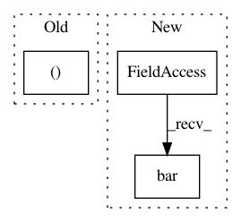

ac69b1035a42e47798e4ea7167f616754be49452,examples/ticks_and_spines/custom_ticker1.py,,,#,27
Before Change
fig, ax = plt.subplots()
ax.yaxis.set_major_formatter(formatter)
plt.bar(x, money)
plt.xticks(x, ("Bill", "Fred", "Mary", "Sue"))
plt.show()
After Change
fig, ax = plt.subplots()
// Use automatic FuncFormatter creation
ax.yaxis.set_major_formatter(millions)
ax.bar(["Bill", "Fred", "Mary", "Sue"], money)
plt.show()
//////////////////////////////////////////////////////////////////////////////////////////////////////////////////////////////////////////////////////////
//
In pattern: SUPERPATTERN
Frequency: 3
Non-data size: 3
Instances
Project Name: matplotlib/matplotlib
Commit Name: ac69b1035a42e47798e4ea7167f616754be49452
Time: 2020-05-01
Author: toddrjen@gmail.com
File Name: examples/ticks_and_spines/custom_ticker1.py
Class Name:
Method Name:
Project Name: mathurinm/celer
Commit Name: b12abd8017390bda394489e745c3a46a2a4d3b69
Time: 2020-08-26
Author: mathurinm@users.noreply.github.com
File Name: examples/plot_leukemia_path.py
Class Name:
Method Name:
Project Name: matplotlib/matplotlib
Commit Name: f872c37f1699d796c4bc535d6f4f5c7c32711403
Time: 2017-12-01
Author: vincent.adrien@gmail.com
File Name: examples/api/barchart.py
Class Name:
Method Name: